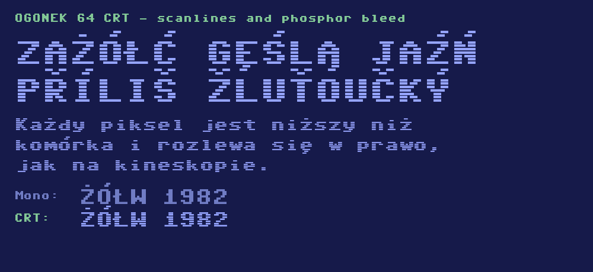

Ogonek 64 is a pixel typeface built on an 8×12 grid, designed around a question that 8-bit home computers never had to answer: what happens when the alphabet needs diacritics? The character sets burned into 1980s ROMs covered unaccented Latin only, so retro pixel fonts fall back to a smooth system typeface mid-word in Polish, Czech or Hungarian text. Ogonek 64 closes that gap and covers the full GF Latin Core glyph set — 319 characters.
The family is named after the ogonek, the tail under ą and ę and the Unicode name of that mark. Accents get two dedicated rows plus a third as clearance, which is why the cell is twelve pixels tall rather than eight: in a single row of eight pixels the circumflex, caron, breve, ring and double acute all collapse into the same smudge.

Ogonek 64 CRT reproduces what a cathode-ray display did to the letters: each pixel is drawn slightly shorter than its cell, leaving a horizontal scanline gap, and bleeds a little to the right the way phosphor persistence smeared a bright pixel into the one after it. The result reads as a screen photograph rather than clean vector art, which is the point.
It is a display face — at small sizes the scanline gaps close up and the effect is lost, so it works best in headings, titles and specimens. For body text and terminals use the companion styles: Ogonek 64 Mono (Regular and Bold, fixed advance width) and Ogonek 64 Sans (proportional). Glyph sources are plain text files, one line per pixel row.